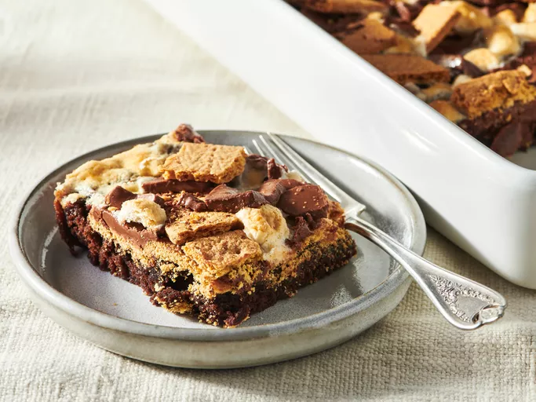

Home
S'mores Brownies

These delicious s'mores brownies let you enjoy the popular campfire
treat on top of a brownie. I consider myself a gourmet cook and
originally thought these would just appeal to kids, but everyone
loves them!
Ingredients
- 1 (16 oz) package fudge brownie mix
- 2 large eggs
- 6 graham crackers
- 1 ½ cups miniature marshmallows
- 8 (1.5 oz) bars milk chocolate, coarsely chopped
- ½ cup vegetable oil
- 3 tbspn water
Steps
- Gather the ingredients. Preheat the oven to 350F (175C).
Grease a 9x13-inch baking dish.
- Stir brownie mix, oil, eggs, and water together in a medium bowl
until well blended. Pour batter into the prepared pan. Bake in
the preheated oven for 15 minutes.
- While the brownies are baking, make the topping: Break graham
crackers into 1-inch pieces and place into a bowl. Add
marshmallows and chopped chocolate and toss to combine.
- Remove brownies from the oven and sprinkle with topping
ingredients. Return to the oven and continue to bake until a
toothpick inserted 2 inches from the side of the pan comes out
clean, 7 to 10 more minutes.
- Slice, serve, and enjoy!